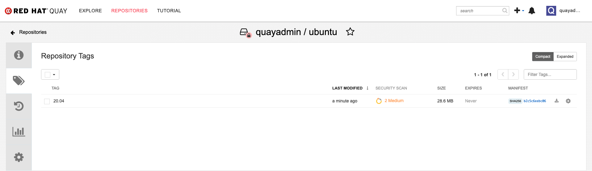
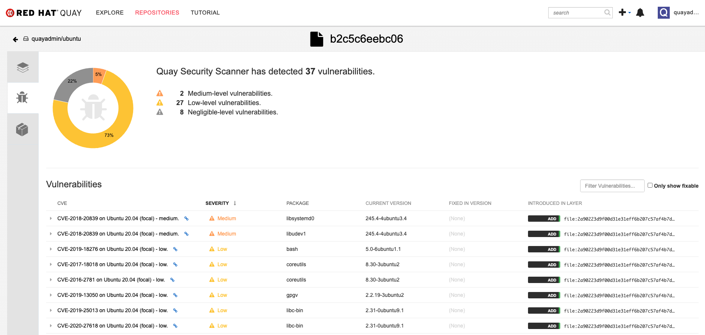

Deploy Red Hat Quay for proof-of-concept (non-production) purposes
Deploy Red Hat Quay
Abstract
- Preface
- 1. Overview
- 2. Getting started with Red Hat Quay
- 3. Advanced Red Hat Quay deployment
- 4. Next steps
Preface
Red Hat Quay is an enterprise-quality registry for building, securing and serving container images. This procedure describes how to deploy Red Hat Quay for proof-of-concept (non-production) purposes.
Chapter 1. Overview
Features of Red Hat Quay include:
- High availability
- Geo-replication
- Repository mirroring
- Docker v2, schema 2 (multiarch) support
- Continuous integration
- Security scanning with Clair
- Custom log rotation
- Zero downtime garbage collection
- 24/7 support
Red Hat Quay provides support for:
- Multiple authentication and access methods
- Multiple storage backends
- Custom certificates for Quay, Clair, and storage backends
- Application registries
- Different container image types
1.1. Architecture
Red Hat Quay consists of a number of core components, both internal and external.
1.1.1. Internal components
- Quay (container registry): Runs the quay container as a service, consisting of several components in the pod.
- Clair: Scans container images for vulnerabilities and suggests fixes.
1.1.2. External components
- Database: Used by Red Hat Quay as its primary metadata storage (not for image storage).
- Redis (key-value store): Stores live builder logs and the Red Hat Quay tutorial.
Cloud storage:For supported deployments, you need to use one of the following types of storage:
- Public cloud storage: In public cloud environments, you should use the cloud provider’s object storage, such as Amazon S3 (for AWS) or Google Cloud Storage (for Google Cloud).
- Private cloud storage: In private clouds, an S3 or Swift compliant Object Store is needed, such as Ceph RADOS, or OpenStack Swift.
Do not use "Locally mounted directory" Storage Engine for any production configurations. Mounted NFS volumes are not supported. Local storage is meant for Red Hat Quay test-only installations.
Chapter 2. Getting started with Red Hat Quay
The Red Hat Quay registry can be deployed for non-production purposes on a single machine (either physical or virtual) with the following specifications.
2.1. Prerequisites
- Red Hat Enterprise Linux (RHEL): Obtain the latest Red Hat Enterprise Linux 8 server media from the Downloads page and follow the installation instructions available in the Product Documentation for Red Hat Enterprise Linux 8.
- Valid Red Hat Subscription: Configure a valid Red Hat Enterprise Linux 8 server subscription.
- CPUs: Two or more virtual CPUs
- RAM: 4GB or more
Disk space: The required disk space depends on the storage needs for the registry. Approximately 30GB of disk space should be enough for a test system, broken down as follows:
- At least 10GB of disk space for the operating system (Red Hat Enterprise Linux Server).
- At least 10GB of disk space for docker storage (to run 3 containers)
- At least 10GB of disk space for Quay local storage (CEPH or other local storage might require more memory)
More information on sizing can be found at Quay 3.x Sizing Guidlines.
2.1.1. Using podman
This document uses podman for creating and deploying containers. If you do not have podman installed on your system, you should be able to use the equivalent docker commands. For more information on podman and related technologies, see Building, running, and managing Linux containers on Red Hat Enterprise Linux 8.
2.2. Configuring the RHEL server
2.2.1. Install and register Red Hat Enterprise Linux server
Install the latest RHEL 8 server. You can do a minimal install (shell access only) or Server plus GUI (if you want a desktop). Register and subscribe your RHEL server system as described in How to register and subscribe a system…. The following commands register your system and list available subscriptions. Choose an available RHEL server subscription, attach to its pool ID and upgrade to the latest software:
+
# subscription-manager register --username=<user_name> --password=<password> # subscription-manager refresh # subscription-manager list --available # subscription-manager attach --pool=<pool_id> # yum update -y
2.2.2. Installing podman
Install podman, if it is not already present on your system:
$ sudo yum install -y podman
Alternatively, you can install the container-tools module, which pulls in the full set of container software packages:
$ sudo yum module install -y container-tools
2.2.3. Registry authentication
Set up authentication to registry.redhat.io, so that you can pull the quay container, as described in Red Hat Container Registry Authentication. Note that this differs from earlier Red Hat Quay releases where the images were hosted on quay.io.
For example, you can log in to the registry:
$ sudo podman login registry.redhat.io Username: <username> Password: <password>
2.2.4. Firewall configuration
If you have a firewall running on your system, to access the Red Hat Quay config tool (port 8443) and application (ports 8080 and 443) outside of the local system, run the following commands (add --zone=<yourzone> for each command to open ports on a particular zone):
# firewall-cmd --permanent --add-port=8443/tcp # firewall-cmd --permanent --add-port=8080/tcp # firewall-cmd --permanent --add-port=443/tcp # firewall-cmd --reload
2.2.5. IP addressing and naming services
There are a number of ways to configure the component containers in Red Hat Quay so that they can talk to each other:
Using the IP addresses for the containers: You can determine the IP address for containers with
podman inspectand then use these values in the configuration tool when specifying the connection strings, for example:$ sudo podman inspect -f "{{.NetworkSettings.IPAddress}}" postgresql-quayThis approach is susceptible to host restarts, as the IP addresses for the containers will change after a reboot.
- Using a naming service: If you want your deployment to survive container restarts, which typically result in changed IP addresses, you can implement a naming service. For example, the dnsname plugin is used to allow containers to resolve each other by name.
-
Using the host network: You can use the
podman runcommand with the--net=hostoption and then use container ports on the host when specifying the addresses in the configuration. This option is susceptible to port conflicts when two containers want to use the same port, and as a result it is not recommended. - Configuring port mapping: You can use port mappings to expose ports on the host and then use these ports in combination with the host IP address or host name.
This document uses port mapping in the subsequent examples, and assumes a static IP address for your host system. In this example, quay-server has the IP address 192.168.1.112.
$ cat /etc/hosts ... 192.168.1.112 quay-server
| Component | Port mapping | Address |
|---|---|---|
|
Quay |
|
http://quay-server:8080 |
|
Postgres for Quay |
|
quay-server:5432 |
|
Redis |
|
quay-server:6379 |
|
Postgres for Clair V4 |
|
quay-server:5433 |
|
Clair V4 |
|
http://quay-server:8081 |
2.3. Configuring the database
Quay requires a database for storing metadata and Postgres is recommended, especially for highly available configurations. Alternatively, you can use MySQL with a similar approach to configuration as described below for Postgres.
2.3.1. Setting up Postgres
In this proof-of-concept scenario, you will use a directory on the local file system to persist database data.
In the installation folder, denoted here by the variable $QUAY, create a directory for the database data and set the permissions appropriately:
$ mkdir -p $QUAY/postgres-quay $ setfacl -m u:26:-wx $QUAY/postgres-quay
Use podman to run the Postgres container, specifying the username, password, database name and port, together with the volume definition for database data:
$ sudo podman run -d --rm --name postgresql-quay \ -e POSTGRESQL_USER=quayuser \ -e POSTGRESQL_PASSWORD=quaypass \ -e POSTGRESQL_DATABASE=quay \ -e POSTGRESQL_ADMIN_PASSWORD=adminpass \ -p 5432:5432 \ -v $QUAY/postgres-quay:/var/lib/pgsql/data:Z \ registry.redhat.io/rhel8/postgresql-10:1
Ensure that the Postgres
pg_trgmmodule is installed, as it is required by Quay:$ sudo podman exec -it postgresql-quay /bin/bash -c 'echo "CREATE EXTENSION IF NOT EXISTS pg_trgm" | psql -d quay -U postgres'
2.4. Configuring Redis
Redis ia a key-value store, used by Quay for live builder logs and the Red Hat Quay tutorial.
2.4.1. Setting up Redis
Use podman to run the Redis container, specifying the port and password:
$ sudo podman run -d --rm --name redis \ -p 6379:6379 \ -e REDIS_PASSWORD=strongpassword \ registry.redhat.io/rhel8/redis-5:1
2.5. Configuring Red Hat Quay
Before running the Red Hat Quay service, you need to generate a configuration file containing details of all the components, including registry settings, and database and Redis connection parameters. To generate the configuration file, you run the quay container in config mode, specifying a password (in this instance, secret) for the quayconfig user:
$ sudo podman run --rm -it --name quay_config -p 8080:8080 registry.redhat.io/quay/quay-rhel8:v3.4.1 config secret
Use your browser to access the user interface for the configuration tool at http://quay-server:8080 (assuming you have configured the quay-server hostname in your hosts file). Login with the username quayconfig and password secret (or whatever value you specified in the podman run command above).
2.5.1. Red Hat Quay setup
In the configuration editor, you enter details for the following:
- Basic configuration
- Server configuration
- Database
- Redis
2.5.1.1. Basic configuration
In the basic configuration setting, complete the registry title and the registry short title fields (or you can use the default values, if they are specified).
2.5.1.2. Server configuration
Specify the HTTP host and port, for the location where the registry will be accessible on the network, in this instance, quay-server:8080.
2.5.1.3. Database
In the database section, specify connection details for the database that Red Hat Quay uses to store metadata. If you have followed the instructions in this document for deploying a proof-of-concept system, the following values would be entered:
- Database Type: Postgres
- Database Server: quay-server:5432
- Username: quayuser
- Password: quaypass
- Database Name: quay
2.5.1.4. Redis
The Redis key-value store is used to store real-time events and build logs. If you have followed the instructions in this document for deploying a proof-of-concept system, the following values would be specified:
- Redis Hostname: quay-server
- Redis port: 6379 (default)
2.5.2. Validate and download configuration
When all required fields have been set, validate your settings by choosing the Validate Configuration Changes button. If any errors are reported, continue editing your configuration until all required fields are valid and Red Hat Quay can connect to your database and Redis servers.
Once your configuration is valid, download the configuration file and then stop the quay container that is running the configuration editor.
2.6. Deploying Red Hat Quay
2.6.1. Prerequisites
- Your Quay database and Redis servers are running.
- You have generated a valid configuration bundle.
- You have stopped the Quay container that you used to run the configuration editor.
2.6.2. Prepare config folder
Unpack the configuration bundle so that Quay can use it, for example:
$ mkdir $QUAY/config $ cp ~/Downloads/quay-config.tar.gz $QUAY/config $ cd $QUAY/config $ tar xvf quay-config.tar.gz
2.6.3. Prepare local storage for image data
In this proof-of-concept deployment, use the local file system to store the registry images:
$ mkdir $QUAY/storage $ setfacl -m u:1001:-wx $QUAY/storage
2.6.4. Deploy the Red Hat Quay registry
Use podman to run the quay container, specifying the appropriate volumes for your configuration data and local storage for image data:
$ sudo podman run -d --rm -p 8080:8080 \ --name=quay \ -v $QUAY/config:/conf/stack:Z \ -v $QUAY/storage:/datastorage:Z \ registry.redhat.io/quay/quay-rhel8:v3.4.1
2.7. Using Red Hat Quay
Use your browser to access the user interface for the Red Hat Quay registry at quay-server:8080 (assuming you have configured the quay-server hostname in your hosts file). Select 'Create User' and add a user, for example, quayadmin with a password password.
You can now use the user interface to create new organizations and repositories, and to search and browse existing repositories. Alternatively, you can use the command line interface to interact with the registry and to pull and push images.
From the command line, log in to the registry:
$ sudo podman login --tls-verify=false quay-server:8080 Username: quayadmin Password: Login Succeeded!
2.7.1. Push and pull images
To test pushing and pulling images from the Red Hat Quay registry, first pull a sample image from an external registry:
$ sudo podman pull busybox Trying to pull docker.io/library/busybox... Getting image source signatures Copying blob 4c892f00285e done Copying config 22667f5368 done Writing manifest to image destination Storing signatures 22667f53682a2920948d19c7133ab1c9c3f745805c14125859d20cede07f11f9
Use the podman images command to see the local copy:
$ sudo podman images REPOSITORY TAG IMAGE ID CREATED SIZE docker.io/library/busybox latest 22667f53682a 14 hours ago 1.45 MB ...
Tag this image, in preparation for pushing it to the Red Hat Quay registry:
$ sudo podman tag docker.io/library/busybox quay-server:8080/quayadmin/busybox:test
Now push the image to the Red Hat Quay registry:
$ sudo podman push --tls-verify=false quay-server:8080/quayadmin/busybox:test Getting image source signatures Copying blob 6b245f040973 done Copying config 22667f5368 done Writing manifest to image destination Storing signatures
At this point, you can use your browser to see the tagged image in your repository. To test access to the image from the command line, first delete the local copy of the image:
$ sudo podman rmi quay-server:8080/quayadmin/busybox:test Untagged: quay-server:8080/quayadmin/busybox:test
Now pull the image again, this time from your Red Hat Quay registry:
$ sudo podman pull --tls-verify=false quay-server:8080/quayadmin/busybox:test Trying to pull quay-server:8080/quayadmin/busybox:test... Getting image source signatures Copying blob 6ef22a7134ba [--------------------------------------] 0.0b / 0.0b Copying config 22667f5368 done Writing manifest to image destination Storing signatures 22667f53682a2920948d19c7133ab1c9c3f745805c14125859d20cede07f11f9
Chapter 3. Advanced Red Hat Quay deployment
3.1. Deploying Clair V4
3.1.1. Deploying a separate database for Clair
Clair requires a database for storing metadata and Postgres is recommended, especially for highly available configurations. You can share a common database between Quay and Clair, but in this instance a separate Clair-specific database is deployed.
In this proof-of-concept scenario, you will use a directory on the local file system to persist database data.
In the installation folder, denoted here by the variable $QUAY, create a directory for the Clair database data and set the permissions appropriately:
$ mkdir -p $QUAY/postgres-clairv4 $ setfacl -m u:26:-wx $QUAY/postgres-clairv4
Use podman to run the Postgres container, specifying the username, password, database name and port, together with the volume definition for database data. As the standard Postgres port,
5432, is already in use by Quay, expose a different port, in this instance5433:$ sudo podman run -d --rm --name postgresql-clairv4 \ -e POSTGRESQL_USER=clairuser \ -e POSTGRESQL_PASSWORD=clairpass \ -e POSTGRESQL_DATABASE=clair \ -e POSTGRESQL_ADMIN_PASSWORD=adminpass \ -p 5433:5432 \ -v $QUAY/postgres-clairv4:/var/lib/pgsql/data:Z \ registry.redhat.io/rhel8/postgresql-10:1
Ensure that the Postgres
uuid-osspmodule is installed, as it is required by Clair:$ sudo podman exec -it postgresql-quay /bin/bash -c 'echo "CREATE EXTENSION IF NOT EXISTS \"uuid-ossp\"" | psql -d clair -U postgres'
3.1.2. Quay configuration for Clair
Stop the quay container if it is running, and restart it in configuration mode, loading the existing configuration as a volume:
$ sudo podman run --rm -it --name quay_config \ -p 8080:8080 \ -v $QUAY/config:/conf/stack:Z \ registry.redhat.io/quay/quay-rhel8:v3.4.1 config secret
Log in to the configuration tool and enable scanning, in the Security Scanner section of the UI. Set the HTTP endpoint for Clair, using a port that is not already in use on the quay-server system, for example 8081. Create a Clair pre-shared key (PSK) using the Generate PSK button, for example:
-
Security Scanner Endpoint:
http://quay-server:8081 -
Security Scanner PSK:
MTU5YzA4Y2ZkNzJoMQ==
The UI for setting the scanner data is shown in the following image:
Security Scanner UI

Validate and download the configuration and then stop the quay container that is running the configuration editor. Extract the configuration bundle as before into the $QUAY/config directory.
$ cp ~/Downloads/quay-config.tar.gz $QUAY/config $ cd $QUAY/config $ tar xvf quay-config.tar.gz
The Quay configuration file is updated to contain the fields for the security scanner:
$QUAY/config/config.yaml
FEATURE_SECURITY_NOTIFICATIONS: false FEATURE_SECURITY_SCANNER: true ... SECURITY_SCANNER_INDEXING_INTERVAL: 30 SECURITY_SCANNER_V4_ENDPOINT: http://quay-server:8081 SECURITY_SCANNER_V4_PSK: MTU5YzA4Y2ZkNzJoMQ== SERVER_HOSTNAME: quay-server:8080
3.1.3. Clair configuration
Detailed information on Clair configuration is available at https://github.com/quay/clair/blob/main/Documentation/reference/config.md. The following example provides a minimal configuration for use in a proof of concept deployment:
/etc/clairv4/config/config.yaml
http_listen_addr: :8081
introspection_addr: :8089
log_level: debug
indexer:
connstring: host=quay-server port=5433 dbname=clair user=clairuser password=clairpass sslmode=disable
scanlock_retry: 10
layer_scan_concurrency: 5
migrations: true
matcher:
connstring: host=quay-server port=5433 dbname=clair user=clairuser password=clairpass sslmode=disable
max_conn_pool: 100
run: ""
migrations: true
indexer_addr: clair-indexer
notifier:
connstring: host=quay-server port=5433 dbname=clair user=clairuser password=clairpass sslmode=disable
delivery_interval: 1m
poll_interval: 5m
migrations: true
auth:
psk:
key: "MTU5YzA4Y2ZkNzJoMQ=="
iss: ["quay"]
# tracing and metrics
trace:
name: "jaeger"
probability: 1
jaeger:
agent_endpoint: "localhost:6831"
service_name: "clair"
metrics:
name: "prometheus"
-
http_listen_addris set to the port of the Clair HTTP endpoint that you specified in the Quay configuration tool, in this case:8081. -
The Clair pre-shared key (PSK) that you generated in the Quay configuration tool is used for authentication, with the issuer, specified in the
issfield, set toquay.
3.1.4. Running Clair
Use the podman run command to run the Clair container, exposing the HTTP endpoint port that you specified in the configuration tool, in this case 8081:
sudo podman run -d --rm --name clairv4 \ -p 8081:8081 -p 8089:8089 \ -e CLAIR_CONF=/clair/config.yaml -e CLAIR_MODE=combo \ -v /etc/clairv4/config:/clair:Z \ registry.redhat.io/quay/clair-rhel8:v3.4.1
Now restart the Quay container, using the updated configuration file containing the scanner settings:
$ sudo podman run -d --rm -p 8080:8080 \ --name=quay \ -v $QUAY/config:/conf/stack:Z \ -v $QUAY/storage:/datastorage:Z \ registry.redhat.io/quay/quay-rhel8:v3.4.1
3.1.5. Using Clair security scanning
From the command line, log in to the registry:
$ sudo podman login --tls-verify=false quay-server:8080 Username: quayadmin Password: Login Succeeded!
Pull, tag and push a sample image to the registry:
$ sudo podman pull ubuntu:20.04 $ sudo podman tag docker.io/library/ubuntu:20.04 quay-server:8080/quayadmin/ubuntu:20.04 $ sudo podman push --tls-verify=false quay-server:8080/quayadmin/ubuntu:20.04
The results from the security scanning can be seen in the Quay UI, as shown in the following images:
Scanning summary

Scanning details

3.2. Restarting containers
Because the --restart option is not fully supported by podman, you can configure podman as a systemd service, as described in Porting containers to systemd using Podman
3.2.1. Using systemd unit files with Podman
By default, Podman generates a unit file for existing containers or pods. You can generate more portable systemd unit files using the podman generate systemd --new command. The --new flag instructs Podman to generate unit files that create, start and remove containers.
Create the systemd unit files from a running Red Hat Quay registry as follows:
$ sudo podman generate systemd --new --files --name postgresql-quay $ sudo podman generate systemd --new --files --name redis $ sudo podman generate systemd --new --files --name quay
Copy the unit files to
/usr/lib/systemd/systemfor installing them as a root user:$ sudo cp -Z container-redis.service /usr/lib/systemd/system $ sudo cp -Z container-postgresql-quay.service /usr/lib/systemd/system $ sudo cp -Z container-quay.service /usr/lib/systemd/system
Reload systemd manager configuration:
$ sudo systemctl daemon-reload
Enable the services and start them at boot time:
$ sudo systemctl enable --now container-redis.service $ sudo systemctl enable --now container-postgresql-quay.service $ sudo systemctl enable --now container-quay.service
3.2.2. Starting, stopping and checking the status of services
Check the status of the Quay components:
$ sudo systemctl status container-redis.service $ sudo systemctl status container-postgresql-quay.service $ sudo systemctl status container-quay.service
To stop the Quay component services:
$ sudo systemctl stop container-redis.service $ sudo systemctl stop container-postgresql-quay.service $ sudo systemctl stop container-quay.service
To start the Quay component services:
$ sudo systemctl start container-redis.service $ sudo systemctl start container-postgresql-quay.service $ sudo systemctl start container-quay.service
3.2.3. Testing restart after reboot
Once you have the services configured and enabled, reboot the system. When the system has re-started, use podman ps to check that all the containers for the Quay components have been restarted:
$ sudo podman ps -a CONTAINER ID IMAGE COMMAND CREATED STATUS PORTS NAMES 215ea92f75be registry.redhat.io/quay/quay-rhel8:v3.4.0 registry 36 seconds ago Up 35 seconds ago 0.0.0.0:8080->8080/tcp quay 82fd8191ef50 docker.io/library/postgres:10.12 postgres 36 seconds ago Up 35 seconds ago 0.0.0.0:5432->5432/tcp postgresql-quay bca9a7ea090b docker.io/library/redis:5.0.7 --requirepass str... 36 seconds ago Up 36 seconds ago 0.0.0.0:6379->6379/tcp redis
Log in to the Red Hat Quay registry at quay-server:8080 to check that everything has restarted correctly.
Chapter 4. Next steps
This document shows how to configure and deploy a proof-of-concept version of Red Hat Quay. For more information on deploying to a production environment, see the guide "Deploy Red Hat Quay - High Availability".
The "Use Red Hat Quay" guide shows you how to:
- Add users and repositories
- Use tags
- Automatically build Dockerfiles with build workers
- Set up build triggers
- Add notifications for repository events
The "Manage Red Hat Quay" guide shows you how to:
- Use SSL and TLS
- Enable security scanning with Clair
- Use repository mirroring
- Configure LDAP authentication
- Use georeplication of storage